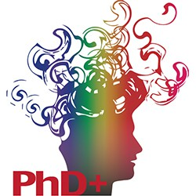

I 4 pilastri
centro di competenza regionale
Big Data, Data Science
e Artificial Intelligence
1.
Accesso
2.
Formazione
3.
Trasferimento Tecnologico
4.
Ricerca
1.
Accesso
Vengono messe a disposizione delle imprese, delle pubbliche amministrazioni e di tutti gli enti pubblici e privati interessati al tema dei Big Data & AI il sistema delle conoscenze, delle competenze, dei dati, degli algoritmi, degli strumenti software e delle infrastrutture di ricerca disponibili
Saranno previste due modalità di accesso per permettere alle aziende, pubbliche amministrazioni, enti e ricercatori di fruire dei servizi direttamente presso i nodi del centro oppure da remoto sfruttando gli strumenti web e le infrastrutture di calcolo messe a disposizione dai laboratori di ricerca partecipanti.
Verranno messe a disposizione per la fase di startup del centro (e successivamente estese e/o ritagliate opportunamente) le risorse delle e-infrastructures già presenti nei laboratori proponenti il centro, come ad esempio quella fornita dal progetto SoBigData.eu che fornisce una piattaforma per l’esecuzione di esperimenti di Big Data Analytics con più di 200 algoritmi, datasets e moduli di training on-line.
2.
Formazione
La formazione di figure professionali di “Data Scientist”, software engineers, esperti di analisi, algoritmi e modelli per l’analisi di dati e Big Data, ed esperti di AI costituisce una delle priorità per il Centro proposto. Alcuni degli organismi di accademici che lo propongono sono i promotori ed attuatori di numerose iniziative di formazione magistrale e superiore elencate nella seguente tabella. Tutte queste iniziative didattiche producono annualmente centinaia di tirocini curriculari e di laureati; i proponenti ritengono che un primo compito del centro sia quello di costituire uno spazio di incontro tra le imprese e i formandi per attrarre e trattenere talenti nelle imprese e negli enti toscani.
Saranno pianificati per il quadriennio 2020-2024 i) eventi formativi rivolti a studenti ed insegnanti delle scuole superiori; ii) boot camp e dathaton; iii) assegni di ricerca co-finanziati dalle aziende. Queste iniziative costituiranno la base del programma formativo del Centro, che si arricchirà di una più variegata offerta rivolta al mondo delle imprese (di tutte le dimensioni) e della pubblica amministrazione. Verranno, per esempio, realizzati corsi intensivi su temi specifici definiti sulla base delle specifiche esigenze di (gruppi di) aziende o amministrazioni del territorio. Verrà inoltre potenziata la rete fra università e imprese per la realizzazione di tirocini curriculari ed extra-curriculari in riferimento alla ricca offerta formativa degli atenei toscani in materia di Big Data ed AI.Promozione
Verranno poste in essere diverse iniziative per promuovere la conoscenza delle opportunità e delle soluzioni connesse al tema Big Data & AI nell’ambito dei processi di digitalizzazione;
| OFFERTA FORMATIVA ISTITUZIONALE |
|---|
| Master di secondo livello congiunto in Data Science and Statistical Learning promosso dal Florence Center for Data Science dell’Università di Firenze e dalla Scuola IMT Alti Studi Lucca (la cui attivazione è prevista per l’a.a. 2020/21) |
| Master in Big Data Analytics and Technologies for Management e del master in Digital Transformation dell’Università di Firenze. |
| Master di secondo livello in Big Data Analytics & Social Mining attivo dal 2014 presso l’Università di Pisa, in collaborazione con il CNR, Scuola Sant’Anna, la Scuola Normale Superiore e la Scuola IMT Lucca |
| Dottorato di ricerca in Data Science coordinato dalla Scuola Normale Superiore (dottorato congiunto con Università di Pisa, CNR, Scuola Superiore Sant’Anna, Scuola IMT Alti Studi di Lucca), e CNR |
| Dottorato Pegaso in Informatica (congiunto tra le Università di Pisa, Firenze e Siena), |
| Dottorato Pegaso in Smart Computing (congiunto tra le Università di Firenze, Pisa e Siena, il Consiglio Nazionale delle Ricerche e la fondazione Bruno Kessler di Trento), |
| Dottorato in Matematica, Informatica e Statistica dell’Università di Firenze con borse tematiche in Data Science. |
| Presso l’Università di Firenze sono attivi il corso di laurea magistrale in Statistica e Data Science, il curriculum “Data Science” in seno alla Laurea Magistrale in Informatica, il corso di laurea magistrale in “Ingegneria Informatica” con ambiti di specializzazione in “Intelligent Systems” e “Data Analytics, Management and Security”. |
| Presso l’Università di Pisa è attivo dal 2002 il corso di Laurea Magistrale in Data Science & Business Informatics, e sono attivi dal 2019 i curricula di Intelligenza Artificiale e di Knowledge and Data Engineering in seno alla Laurea Magistrale in Informatica |
| È attiva, dal 2017, la scuola biennale “Optimization, Big Data and Optimization”, organizzata da DINFO/UNIFI, che si svolge a Veroli (FR) – https://webgol.dinfo.unifi.it/oba/index.html. |
| Presso l’Università di Siena sarà attivo dall’anno accademico 2020/21 il corso di Laurea Magistrale in Artificial Intelligence and Automation Engineering, trasformazione del corso di Laurea Magistrale in Computer and Automation Engineering già caratterizzato da un percorso formativo fortemente improntato sulle tematiche dell’AI e del machine learning. |
3.
Technology/knowledge transfer
Le attività del Centro saranno anche rivolte al supporto alla creazione di start-up innovative nell’ambito dei Big Data e dell’AI. I partecipanti al Centro hanno significative esperienze in tal senso, avendo dato origine negli anni ad aziende di successo nei settori di attività del Centro, dove sono confluiti risultati di ricerca innovativa di dottorati svolti nei laboratori proponenti.
Alcune delle Startup avviate negli ultimi anni
Formazione per il trasferimento tecnologico
Inoltre, i partner del Centro hanno creato iniziative di formazione rivolta specificatamente alla valorizzazione delle idee di ricerca
-

il PhD+ dell’Università di Pisa, è pensato per creare quei soft skill per favorire una mentalità imprenditoriale su giovani ricercatori, qualità fondamentale di ogni start-up.
- il Joint Technology Transfer Office della Scuola IMT Alti Studi Lucca, Scuola Superiore Sant’Anna, Scuola Normale Superiore e IUSS Pavia, nonché vari hackathon e datathon), ottenendo importanti riconoscimenti internazionali (quali, per esempio, lo shortlisting al QS Reimagine Education Award 2016).
Creazione di incubatori tecnologici
Agevolare la creazione di incubatori di tecnologie e servizi di AI complementari, mettendo a sistema la rete di aziende già operative nel settore dell’ICT con il supporto alla ricerca.
| STARTUP GIÀ AVVIATE |
|---|
| Da un gruppo di ricerca presso DINFO/UNIFI è nata nel 2011 la spinoff KKT srl, poi confluita in Fleetmatics e successivamente in Verizon Connect; KKT impiega a Firenze alcune decine di ingegneri informatici ed è il centro di ricerca di Verizon Connect per l’intelligenza a bordo veicolo; svolge attività di ricerca e sviluppo nel campio del deep learning per immagini, video e sensori a bordo di automezzi; KKT collabora attivamente con DINFO/UNIFI. |
| Da un gruppo di ricerca DINFO/Unifi è nata nel 2016 Intuendi.com, startup dedicata all’utilizzo di metodi di ottimizzazione e machine learning per la previsione della domanda e la gestione ottimizzata di magazzini. |
| Dal Siena Artificial Intelligence Lab è nata nel 2007 come azienda spinoff Questit, specializzata nello sviluppo di tecnologie proprietarie di Intelligenza Artificiale, specialmente per l’elaborazione del linguaggio naturale, quali assistenti virtuali e semantic business intelligence. Con Questit è stato creato a fine 2018 il laboratorio congiunto Siena Artificial Intelligence for Natural Language (SAINLab). |
| Dai gruppi di ricerca in Big Data ed AI presso il Dipartimento di Informatica, da cui sono nate start-up come BioBeats (AI per il benessere personale) e PlayeRank (AI per lo sport). |
4.
Ricerca
Per garantire lo sviluppo costante delle competenze sulle tematiche del Big Data e dell’AI, il Centro non potrà ovviamente prescindere da una ampia e profonda attività di ricerca. In particolare, la ricerca svolta dai proponenti con i loro partner internazionali mira da una parte a costruire nuovi metodi e nuovi processi analitici, dall’altra ad applicarli a contesti di ricerca interdisciplinari.
L’approccio tipico che il centro seguirà è l’individuazione di significative sfide scientifiche con elevato impatto sociale ed industriale, all’interno delle quali sviluppare nuove metodologie e algoritmi per l’analisi e gestione dei Big Data, nuovi modelli e algoritmi nell’ambito dell’AI, ed approcci innovativi alla loro applicazione.
| Un elemento trasversale di questo approccio è il rispetto dei valori etici. A tal fine, la ricerca condotta nel Centro adotterà una serie di misure affinché: |
|---|
| tutte le ricerche e gli esperimenti realizzati tengano conto dei diritti di privacy delle persone che hanno prodotto i dati |
| il progetto e la realizzazione di software data-driven includano fin dall’inizio tecniche per affrontare compiutamente e correttamente le domande etiche (approccio value-sensitive design) |
| tutte le ricerche adotteranno una logica open-science rendendo riproducibili i loro risultati e rendendo accessibili gli esperimenti (data set, modelli e workflow) sulle e-infrastructures del centro in rispetto alle regole di accessibilità peculiari della ricerca |